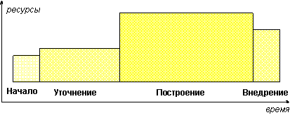
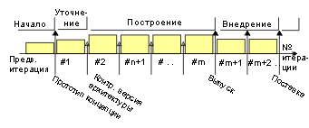
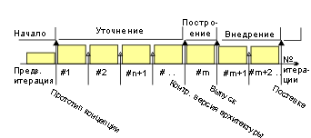
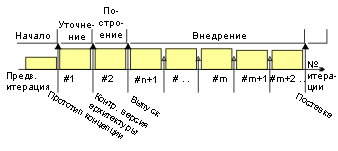
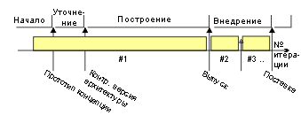

| Жизненный цикл RUP |
 |
|
| Материалы |
|---|
|
Этапы и вехи проекта С точки зрения управления проектом жизненный цикл программного обеспечения в Rational Unified Process (RUP) состоит из четырех последовательных этапов, в конце каждого из которых находится большая веха. Таким образом, каждый этап представляет собой промежуток времени между двумя большими вехами. В конце каждого этапа выполняется проверка того, были ли достигнуты цели, которые были поставлены для данного этапа. Если будет получен положительный ответ, начинается выполнение следующего этапа проекта. Планирование этаповЭтапы отличаются друг от друга по длительности и трудоемкости. Хотя эти характеристики индивидуальны для каждого проекта, для типичного начального цикла разработки проекта среднего размера они распределены следующим образом:
графически это выглядит следующим образом:  На практике распределение может быть другим. Например, автоматизация создания кода и тестовых наборов может привести к сокращению этапа построения. В проектах, заключающихся в модернизации существующих систем, будет короче начальный этап и этап уточнения, поскольку общее видение и архитектура уже будут существовать. Планирование стратегийВ этом разделе обсуждаются несколько шаблонов жизненных циклов, характерных для проектов разных типов. Шаблон жизненного цикла: инкрементальный"Инкрементальная стратегия заключается в выявлении потребностей пользователей, формулировке требований к системе и разработке программного продукта в несколько циклов компоновки. Первый цикл компоновки охватывает часть функций конечной системы, следующий - еще часть функций, и так далее вплоть до построения полной системы". [DOD94] Характерны следующие итерации:
 Эта стратегия применяется в следующих случаях:
Шаблон жизненного цикла: эволюционный"Эволюционная стратегия отличается от стратегии дополнения предположением о том, что потребности пользователей понимаются не в полном объеме, поэтому невозможно заранее предусмотреть все требования, и поэтому требования уточняются в каждом цикле компоновки". [DOD94] Характерны следующие итерации:
 Эта стратегия применяется в следующих случаях:
Шаблон жизненного цикла: Дополняющее внедрениеНекоторые авторы также разделяют поставку программного обеспечения, разрабатываемого по стратегии дополнения, на несколько этапов [GIL88]. Это может потребоваться в ситуациях, когда требуется максимально быстрый вывод продукта на рынок и когда от того, насколько рано будет выпущен продукт, напрямую зависит его коммерческий успех. С точки зрения структуры итераций и этапов, этап внедрения начинается сравнительно рано и содержит максимальное число итераций. Для реализации данной стратегии нужна очень стабильная архитектура, чего сложно добиться в первом цикле разработки при создании системы с нуля. Характерны следующие итерации:
 Эта стратегия применяется в следующих случаях:
Шаблон жизненного цикла: "полномасштабная разработка"Традиционный водопадный метод можно рассматривать в качестве упрощенной модели с одной итерацией на этапе построения. Этот метод называется "полномасштабной разработкой" ("grand design") в книге [DOD94]. На практике избежать дополнительных итераций на этапе внедрения довольно непросто. Характерны следующие итерации:
 Эта стратегия применяется в следующих случаях:
Шаблон жизненного цикла: Гибридная стратегияНа практике проекты очень редко в точности следуют одной стратегии. Зачастую дело заканчивается гибридной стратегией с развитием архитектуры в начале разработки, дополняющей компоновкой и поставкой нескольких версий заказчику. Одно из преимуществ итерационной многоэтапной модели заключается в том, что она позволяет реализовать гибридный подход просто путем увеличения количества итерации и продления тех или иных этапов:
|
© Copyright IBM Corp. 1987, 2006. Все права защищены.. |